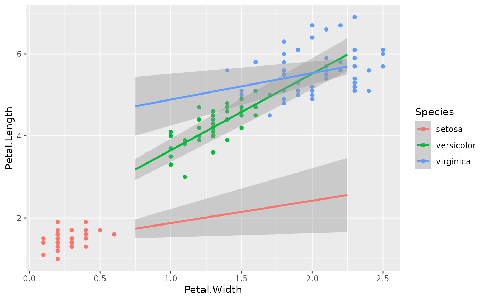
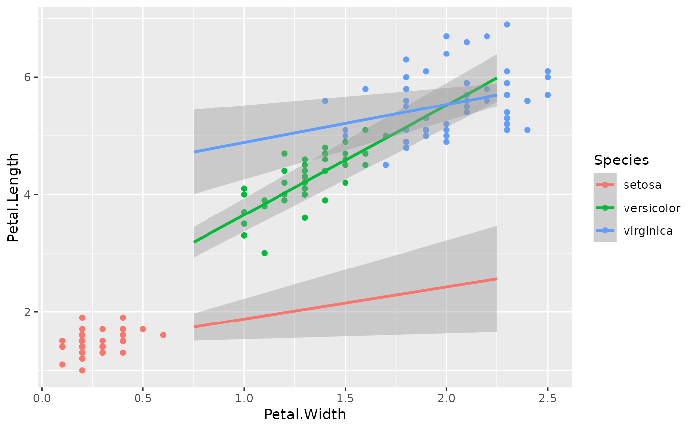

Allows to extend a linear regression line drawn with ggplot2::geom_smooth()
to only one direction (left or right), or to zero.
DOES NOT WORK WITH CURRENT VERSION OF GGPLOT2.
You have to include
source("https://raw.githubusercontent.com/larmarange/JLutils/master/R/lm_right.R")
into your R code.
lm_right(formula, data, ...)
lm_left(formula, data, ...)
lm_zero(formula, data, ...)Arguments
- formula
a model formula
- data
a data.frame
- ...
unused
Details
cf. https://github.com/tidyverse/ggplot2/issues/3132
The implementation should be through a new stat rather than extending
predictdf()
Note: xseq could be passed to ggplot2::geom_smooth()
Note
Adapted from https://stackoverflow.com/questions/26705554/extend-geom-smooth-in-a-single-direction
Examples
p <- ggplot(iris) +
aes(x = Petal.Width, y = Petal.Length, colour = Species) +
geom_point()
# classic geom_smooth
p + geom_smooth(method = "lm")
#> `geom_smooth()` using formula = 'y ~ x'
 # use `fullrange = TRUE` to extend on both sides
p + geom_smooth(method = "lm", fullrange = TRUE)
#> `geom_smooth()` using formula = 'y ~ x'
p + geom_smooth(method = "lm", xseq = c(.75, 2.25))
#> `geom_smooth()` using formula = 'y ~ x'

# use `method = "lm_right"` or `method = "lm_left"`
# with `fullrange = TRUE` to extand in only one direction
p + geom_smooth(method = "lm_right", fullrange = TRUE)
#> `geom_smooth()` using formula = 'y ~ x'
# use `fullrange = TRUE` to extend on both sides
p + geom_smooth(method = "lm", fullrange = TRUE)
#> `geom_smooth()` using formula = 'y ~ x'
p + geom_smooth(method = "lm", xseq = c(.75, 2.25))
#> `geom_smooth()` using formula = 'y ~ x'

# use `method = "lm_right"` or `method = "lm_left"`
# with `fullrange = TRUE` to extand in only one direction
p + geom_smooth(method = "lm_right", fullrange = TRUE)
#> `geom_smooth()` using formula = 'y ~ x'
 p + geom_smooth(method = "lm_left", fullrange = TRUE)
#> `geom_smooth()` using formula = 'y ~ x'
p + geom_smooth(method = "lm_left", fullrange = TRUE)
#> `geom_smooth()` using formula = 'y ~ x'
 # use `method = "lm_zero"` to include zero
p + geom_smooth(method = "lm_zero")
#> `geom_smooth()` using formula = 'y ~ x'
# use `method = "lm_zero"` to include zero
p + geom_smooth(method = "lm_zero")
#> `geom_smooth()` using formula = 'y ~ x'